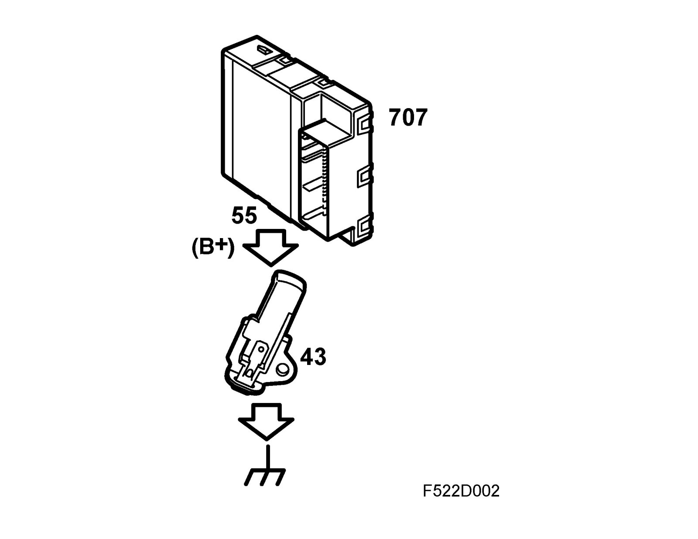
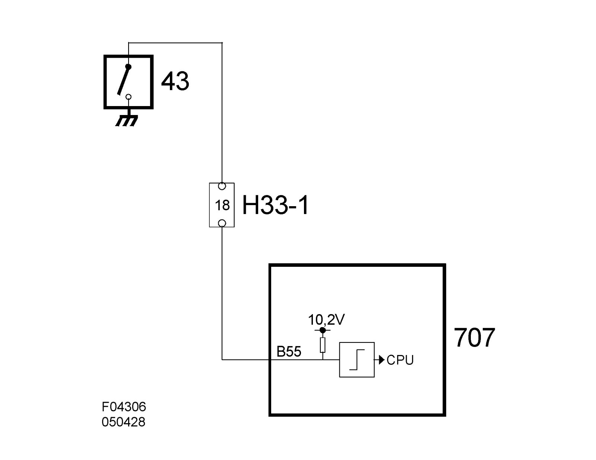

Parking Brake Warning Switch: Description and Operation
Handbrake switch (43)Location
Handbrake switch (43)
Main use
Used to indicate whether or not the lever is in rest (brakes off) position. The value is used to inform the driver that the lever is not completely released. The BCM sends switch status on the bus.
Type
The contact contains a single pin switch. When the lever is in rest (brakes off) position, the breaker is open; when the lever is pulled upwards, the breaker completes the circuit.
Connection (not for control module)

The switch has 1 connector pin.
The switch is chassis-grounded and receives a B+ power supply via integrated BCM resistance of 1.5kO. The control module input is digital; voltage above 2V is determined to be an open circuit and lower than 2V is determined to be closed.
See connection to the BCM in DICE.
